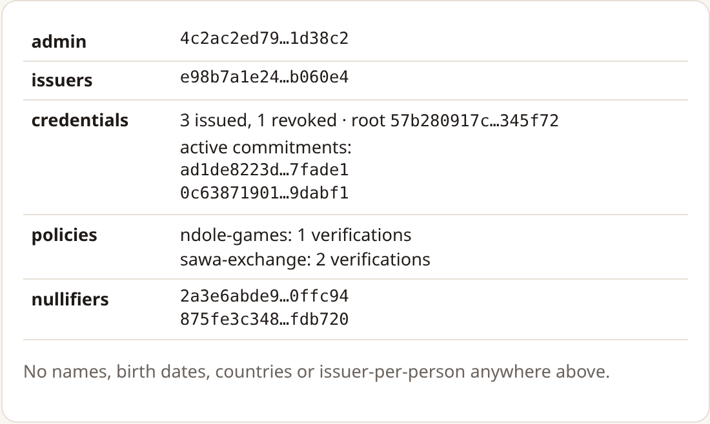
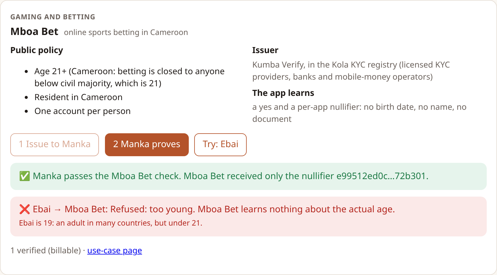
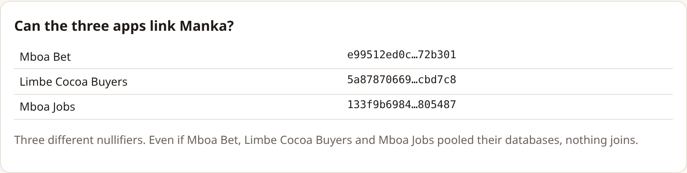

Verify once. Prove anywhere. Stay unlinkable.
Reusable private KYC and credential proofs on Midnight, for the apps that onboard Africa: mobile money, exchanges, lenders, and beyond.
The problem
mobile-money accounts in Cameroon at end-2024, 65% of CEMAC's 51.3 M
BEAC, Rapport sur les services de paiement dans la CEMAC 2024, table 13
registered mobile-money accounts in Sub-Saharan Africa in 2024, up 19%
GSMA, State of the Industry Report on Mobile Money 2025
mobile-money points of service in CEMAC, up 41% in one year
BEAC 2024
The solution
Signs a credential. Only a commitment goes on-chain, into a registry of approved issuers.
Her birth date, country and screening stay on her device as Midnight private state.
A zero-knowledge proof that she meets its public policy, plus a per-app nullifier.
One account per person: the nullifier stops duplicate sign-ups.
Unlinkable: a different nullifier for every app, so apps can't pool data to track her.
Revocable: the issuer can revoke; the proof then fails everywhere.
What Midnight makes possible

In Compact, only what passes through disclose() becomes public: here the app id, the yes/no eligibility result, the nullifier, Merkle roots, the policy and the date. Never the credential's contents. Right: the demo's public ledger after the full story. Threat model: docs/THREAT_MODEL.md.
Demo · mbanyadev.github.io/kola-id
Manka passes a betting app's 21+ check, a cocoa buyer's co-op membership check and a job platform's certificate check, each with a different nullifier.
Refused: Ebai (19) at the betting app, Tabe (lapsed member) at the buyer, a fake diploma mill at issuance.
The real compiled circuits run in the browser. The KYC story is also deployed and replayed on Preprod, with every transaction on the explorer.


Beyond finance · same contract, three registries
| Industry | Issuer → app | Public policy | Why it matters |
|---|---|---|---|
| Gaming | KYC provider → betting operator | 21+, Cameroon, one account per person | Betting is closed below civil majority (21) and online operators must prevent minors' access (Decree 2019/2300/PM art. 16; Penal Code art. 249-7) |
| Agriculture | Cocoa co-op union → buyer | Current member (re-checked ≤ 365 days), adult, Cameroon | EUDR applies from 30 Dec 2026 for large and medium operators; FAO is supporting Cameroon co-ops to comply |
| Jobs | Accredited institute → job platform | Certificate authenticated ≤ 2 years, not expired, adult | Cameroon's public service launched a diploma-authentication platform in Oct 2024; private employers have none |
A co-op union can't mint ID checks and an institute can't mint memberships, because each registry approves only its own issuers. This is enforced by the existing contract and covered by tests. A typed claim field (one registry, many credential types) is on the v2 roadmap.
Built on Midnight
d79be6ed9ae73874daa10a1e9e3b36f8772a5d7eb7991f18af1b8975c9027be3
Deployed 27 Oct 2026. The full story (approve issuer, issue, publish policies, sign-ups, refusals, revocation) was run on-chain, and every transaction is linked to the Midnight explorer in the repo.
The Co-op and Skills registry presets run in the in-browser simulator only; they are not deployed to Preprod yet.
Business model (proposed)
first 1,000 proofs per app, for design partners
(≈ €0.23) per sign-up proof, 10 FCFA per returning login. No monthly minimum.
per proof, with issuer file access under a reliance agreement
Go-to-market and competition
Proposed plan. No issuers or apps have signed yet.
| Player | Kola ID's angle |
|---|---|
| Smile ID, Youverify African KYC leaders | Potential issuers: Kola makes their checks reusable without sharing the person |
| Sumsub ID vendor reusable KYC | Reuse inside one vendor, and apps still get personal data |
| Privado ID ZK credentials, EVM | Closest concept. Kola uses Midnight private state, per-app nullifiers and on-chain issuer registries, with CEMAC policies |
| World ID | Proves "unique human" via biometrics, not age, membership or skills |
| Hyperledger Identus | An SSI toolkit, with no registry, policies or billing |
Where we are and what's next
The ask: Midnight Build Club support, and introductions to one issuer and one app in each vertical.
Honest status: no users, customers or revenue yet. All people and companies in the demo are fictional. Sources: docs/BUSINESS.md.